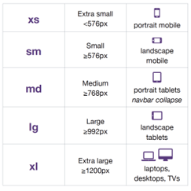
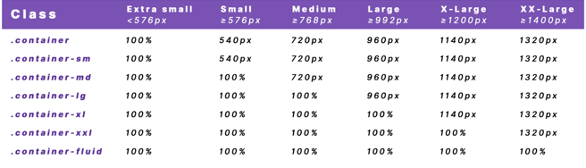
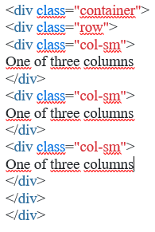
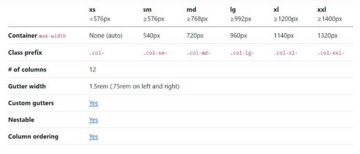
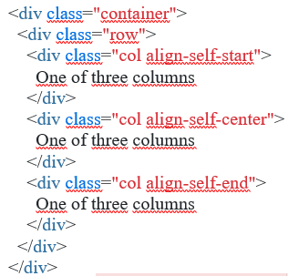
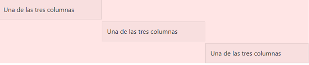
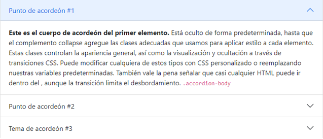
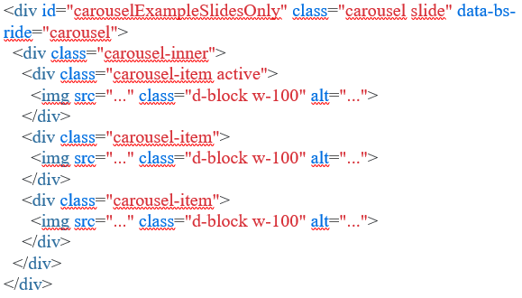
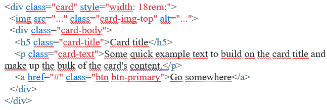

La programación implica ordenar, estructurar o componer una serie de acciones cronológicas para cumplir un objetivo. La programación puede ser aplicado para eventos sociales, a medios de comunicación y al mundo informático de las computadoras.
¿Cuál es la diferencia del Desarrollo Web versus el Diseño Web?
El Diseño web se encarga de definir el apartado visual de una web; mientras que el Desarrollo web traslada esta propuesta de diseño a los lenguajes de programación web, tanto a nivel de Front-end como de Back-end.
¿Qué es un modelo cliente servidor?
Representa una tecnología de punta donde se utilizan ciertos protocolos de conexión a la red. El modelo cliente servidor establece una relación entre servidor y el cliente, en la cual este último solicita diversos servicios en función de un modelo de comunicación específico.
¿Qué es un servidor?
Es un sistema que proporciona recursos, datos, servicios o programas a otros ordenadores, conocidos como clientes, a través de una red. En teoría, se consideran servidores aquellos ordenadores que comparten recursos con máquinas cliente. Existen muchos tipos de servidores, como los servidores web, los servidores de correo y los servidores virtuales.
¿Cuál es la diferencia entre un lenguaje compilado y uno interpretado?
La diferencia entre los lenguajes compilados e interpretados es que los primeros usan un compilador para poder traducirlo y ejecutar el programa, mientras que los segundos requieren de un intérprete que traduzca el código al momento de la ejecución.
¿Qué es HTML?
Es el lenguaje con el que se define el contenido de las páginas web. Básicamente se trata de un conjunto de etiquetas que sirven para definir el texto y otros elementos que compondrán una página web, como imágenes, listas, vídeos, etc.
¿Qué es CSS?
Es lo que se denomina lenguaje de hojas de estilo en cascada y se usa para estilizar elementos escritos en un lenguaje de marcado como HTML. CSS separa el contenido de la representación visual del sitio.
¿Cuál es la estructura básica de una página en HTML, explique cada parte?
Doctype html
head=Es la cabecera de la página. Aquí va cierta información que no es directamente el contenido de la página. Aquí se pone el título de la página.
title=Indica el título de la página.
body=Aquí va propiamente el contenido de la página: fotos, párrafos, formularios, etc.
nav=Representa una sección de una página cuyo propósito es proporcionar enlaces de navegación.
main=Representa el contenido principal del
footer=Representa un pie de página para el contenido de sección más cercano o el elemento raíz de sección
¿Cómo se realizan las referencias dentro del CSS a clases o IDs dentro de HTML?
Clases:
Al siguiente párrafo le podemos añadir la clase “destacado”:
Y en CSS lo ponemos en naranja a través de la propiedad “color”. Para marcar que es una clase anteponemos un punto al nombre de la clase:
.destacado {color:orange;}
ID:
si lo hacemos con un ID:
id="destacado">Aquí va el texto que quiero destacar.
En el código CSS, para indicar que es un ID, anteponemos el símbolo almohadilla (#) en vez del punto
Explique al menos 6 atributos que usted puede cambiar a un elemento desde CSS.
Font-family: Define la familia tipográfica.
Font-size: Define el tamaño de la fuente.
Color: Define el color de la tipografía.
Width: Define el ancho de un elemento.
Max-width o min-width: Definen el ancho máximo o mínimo de un elemento. Muy importante en sitios adaptables.
Height: Define el alto de un elemento, el valor se puede escribir en pixels, ems o porcentaje.
Bootstrap
¿Qué es un framework en el diseño de páginas web?
Es una herramienta de desarrollo web que, por lo general, se define como una aplicación o conjunto de módulos que permiten el desarrollo ágil de aplicaciones mediante la aportación de librerías y/o funcionalidades ya creadas.
¿Qué es BootStrap?
Bootstrap es un kit de herramientas de código abierto para desarrollos web responsive con HTML, CSS y JavaScript. Con él puedes darle forma a tu sitio web a través del uso de sus librerías CSS y JavaScript. Incluye diferentes componentes: ventanas modales, menús, cuadros, botones, formularios.
¿Cómo se utiliza BootStrap?
Para que funcione correctamente, es necesario agregar las bibliotecas JQuery y Popper.js, necesarias para la ejecución de algunos componentes de Bootstrap.
Para comenzar a usar Bootstrap en una página, es necesario agregar las referencias de los principales archivos del framework en la página principal de la aplicación.
Es importante seguir las referencias en el orden establecido en el ejemplo. Por lo tanto, la primera referencia debe ser el archivo bootstrap.css ubicado en la etiqueta head Las referencias a los archivos JavaScript deben colocarse en la parte inferior de la página, antes de cerrar la etiqueta
. El valor predeterminado para los scripts debe ser: JQuery, Popper.js y Bootstrap.js.
Explique 4 elementos de Layouts de BootStrap, coloque el código y explique ¿para qué sirve? ¿Cómo se usan?
Breakpoints:
Cada punto de interrupción fue elegido para contener cómodamente contenedores cuyos anchos son múltiplos de 12. Los puntos de interrupción también son representativos de un subconjunto de tamaños de dispositivo comunes y dimensiones de ventana gráfica: no se dirigen específicamente a cada caso o dispositivo de uso. En su lugar, los rangos proporcionan una base sólida y consistente sobre la que construir para casi cualquier dispositivo.

Containers:
Los contenedores son el elemento de diseño más básico de Bootstrap y son necesarios cuando se utiliza nuestro sistema de cuadrícula predeterminado. Los contenedores se utilizan para contener, rellenar y (a veces) centrar el contenido dentro de ellos. Aunque los contenedores se pueden anidar, la mayoría de los diseños no requieren un contenedor anidado.Bootstrap viene con tres contenedores diferentes:
•.container, que establece un punto de interrupción en cada punto de interrupción responsivo max-width
•.container-fluid, que es en todos los puntos de quiebre width: 100%
•.container-{breakpoint}, que es hasta el punto de interrupción especificado width: 100%

Grid:
Sirve para crear diseños de todas las formas y tamaños gracias a un sistema de doce columnas, seis niveles de respuesta predeterminados, variables y mixins Sass y docenas de clases predefinidas.

Como funciona:
•Admite seis puntos de interrupción responsivos.
•Los contenedores se centran y se rellenan horizontalmente el contenido.
•Las filas son contenedores para columnas.
•Las columnas son increíblemente flexibles.
•Las canaletas también son sensibles y personalizables.
•Las variables, mapas y mixins sass alimentan la red.

Columns:
•Las columnas se basan en la arquitectura flexbox de la cuadrícula. Flexbox significa que tenemos opciones para cambiar columnas individuales y modificar grupos de columnas en el nivel de fila. Elija cómo crecen, se encogen o cambian las columnas.
•Al crear diseños de cuadrícula, todo el contenido va en columnas. La jerarquía de la cuadrícula de Bootstrap va de contenedor en fila a columna a su contenido. En raras ocasiones, puede combinar contenido y columna, pero tenga en cuenta que puede haber consecuencias no deseadas.
•Bootstrap incluye clases predefinidas para crear diseños rápidos y responsivos. Con seis puntos de interrupción y una docena de columnas en cada nivel de cuadrícula, tenemos docenas de clases ya creadas para crear los diseños deseados. Esto se puede desactivar a través de Sass si lo desea.


Explique 6 Elementos de Components de BootStrap, coloque el código y explique ¿para qué sirve? ¿Cómo se usan?
Accordion
Un acordeón está formado por regiones desplegables que permiten mostrar u ocultar contenido pulsando sobre un botón.
El acordeón utiliza el colapso internamente para hacerlo plegable. Para representar un acordeón expandido, agregue la clase en el archivo... .open.accordion

Carousel:
Es una presentación de diapositivas construidas con transformaciones CSS 3D y un poco de JavaScript. Funciona con una serie de imágenes, texto o marcado personalizado. También incluye soporte para controles e indicadores anteriores/siguientes.

Cards:
Las tarjetas admiten una amplia variedad de contenido, incluidas imágenes, texto, grupos de listas, enlaces y mucho más.
Es un contenedor de contenido flexible y extensible. Incluye opciones para encabezados y pies de página, una amplia variedad de contenido, colores de fondo contextuales y potentes opciones de visualización. Si estás familiarizado con Bootstrap 3, las cartas reemplazan nuestros viejos paneles, pozos y miniaturas. Una funcionalidad similar a esos componentes está disponible como clases modificadoras para tarjetas.

Navbar:
•Las barras de navegación requieren un ajuste con para las clases de esquema de color y colapsado responsivo..navbar.navbar-expand{-sm|-md|-lg|-xl|-xxl}
•Las barras de navegación y su contenido son fluidas de forma predeterminada. Cambie el contenedor para limitar su ancho horizontal de diferentes maneras.
•Utilice nuestras clases de utilidad de espaciado y flexión para controlar el espaciado y la alineación dentro de las barras de navegación.
•Las barras de navegación responden de forma predeterminada, pero puede modificarlas fácilmente para cambiarlas. El comportamiento responsivo depende de nuestro plugin Collapse JavaScript.
•Garantice la accesibilidad mediante un elemento o, si utiliza un elemento más genérico como un, agregue a cada barra de navegación para identificarlo explícitamente como una región de referencia para los usuarios de tecnologías de asistencia